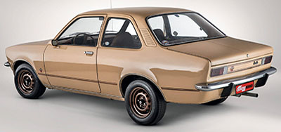
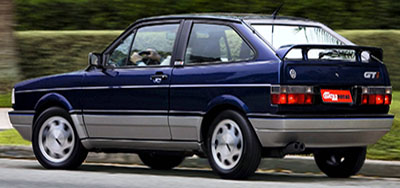
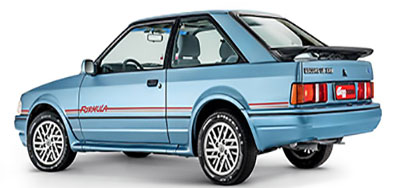
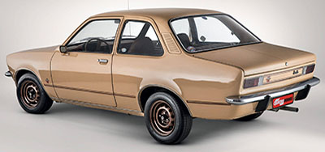
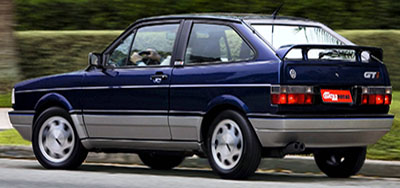
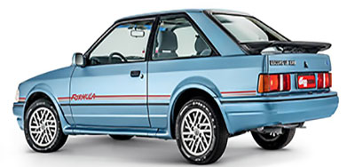

Fundador da Ford Company em 1903, criou o primeiro veículo a motor e a primeira linha de montagem em série.
Carro criado na Alemanha por volta de 1930, a pedido de Adolf Hittler e em 1959 começou a ser fabricado no Brasil.
Foi relançado em 1993 e chegou a marca de 40 mil novos Fuscas vendidos no Brasil.
 




